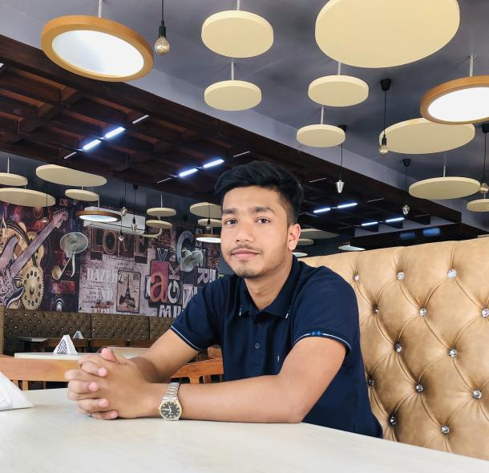

About
Ehosanul Islam SazitHello there! 👋 I'm Sazit, a highly focused and innovative software engineer with a profound love for writing codes, solving complex problems, and honing my skills in competitive programming. My ultimate goal is to make a significant impact in the world of technology through continuous learning and creative problem-solving. 🚀 Competitive Programming Passion: In the captivating world of competitive programming, my journey has been truly exhilarating. I thrive on the adrenaline rush that comes from tackling algorithmic challenges and devising efficient solutions. This dynamic arena has honed my coding skills and fostered a profound understanding of diverse data structures and algorithms. 🔍 Problem Solver at Heart: As a dedicated problem solver, I combine analytical thinking and creativity to tackle challenges. I delight in breaking down complex problems into manageable components, crafting elegant solutions. With a strong foundation in data structures and algorithms, my problem-solving capabilities are fortified, enabling me to excel.
🌟 Tech Enthusiast: Passionate about technology, I'm an ardent explorer of the latest advancements in the tech world. Immersing myself in the dynamic tech community, I embrace every opportunity for growth. If you share a passion for technology, algorithmic problem-solving, and pushing the boundaries in software engineering, let's connect and collaborate! Reach out via LinkedIn or email at sazitislam96@gmail.com , and together, let's explore exciting possibilities. Happy coding! 💻✨